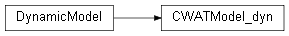
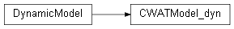

cwatm_initial module¶
 

-
class
cwatm_initial.CWATModel_ini¶ Bases:
pcraster2.dynamicPCRasterBase.DynamicModelCWATN initial part this part is to initialize the variables. It will call the initial part of the hydrological modules
-
currentTimeStep()¶ Return the current time step in the range from firstTimeStep to nrTimeSteps.
-
dynamic()¶
-
firstTimeStep()¶ Return first timestep of a model.
-
initial()¶
-
nrTimeSteps()¶ Return the number of time steps
-
setQuiet(quiet=True)¶ Disables the progress display of timesteps.
-
timeSteps()¶ Return a list of time steps
-